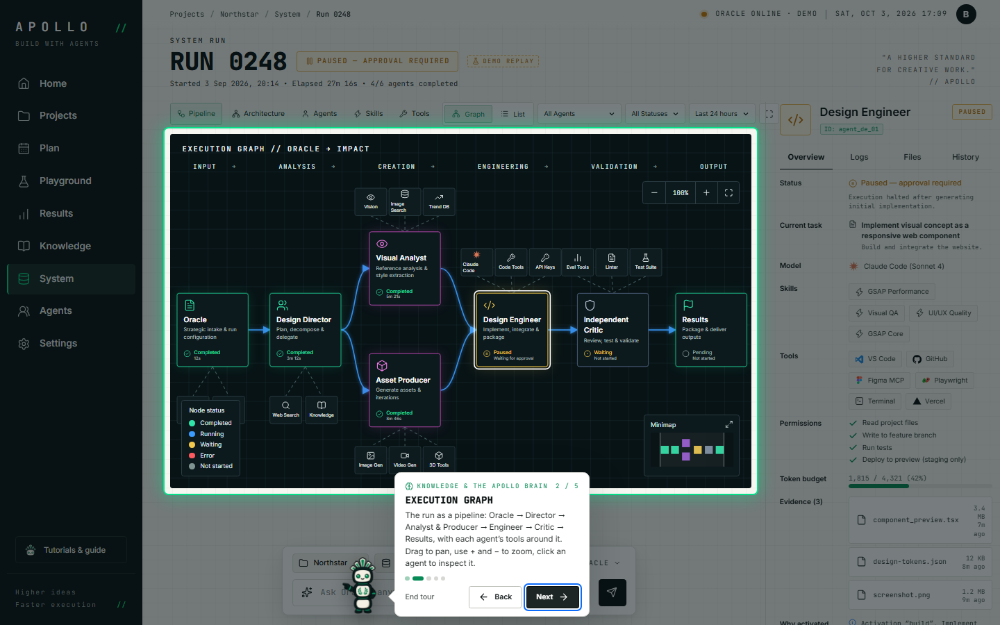
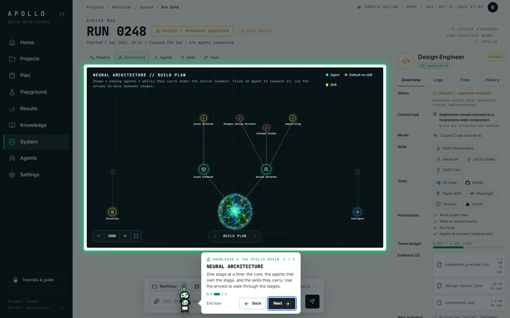
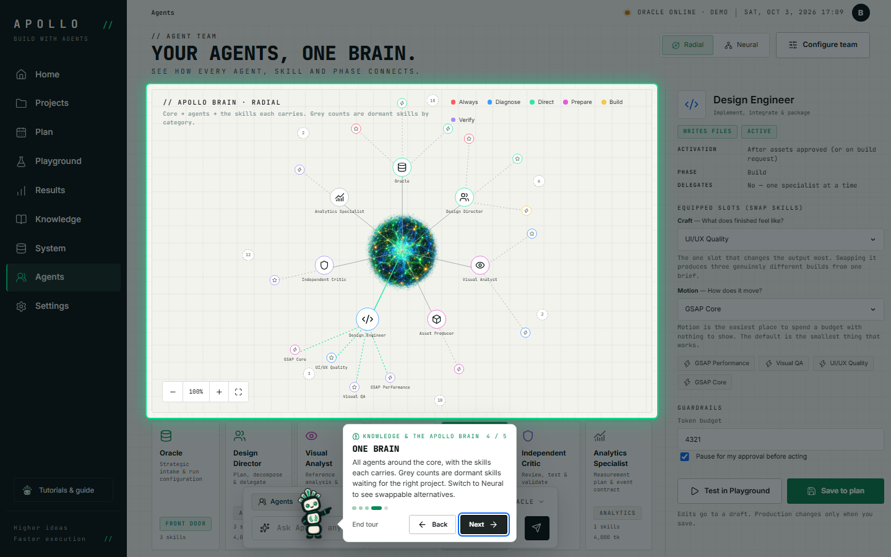
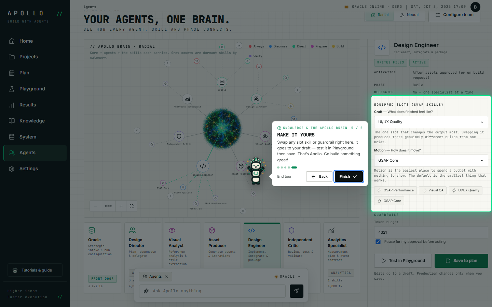

Recorded automatically with Playwright on a scratch copy of the data.
- 01

Knowledge graph
Every fact has a source and a typed relationship: defines, informs, aligns, enables, conflicts. Click a node to open its evidence. Switch the collection to see the live skill library.
Screen:
#/knowledge
- 02

Execution graph
The run as a pipeline: Oracle → Director → Analyst & Producer → Engineer → Critic → Results, with each agent’s tools around it. Drag to pan, use + and − to zoom, click an agent to inspect it.
Screen:
#/system/0248
- 03

Neural architecture
One stage at a time: the core, the agents that own the stage, and the skills they carry. Use the arrows to walk through the stages.
Screen:
#/system/0248?tab=architecture
- 04
One brain
All agents around the core, with the skills each carries. Grey counts are dormant skills waiting for the right project. Switch to Neural to see swappable alternatives.
Screen:
#/agents
- 05

Make it yours
Swap any slot skill or guardrail right here. It goes to your draft — test it in Playground, then save. That’s convenium.design. Go build something great!
Screen:
#/agents